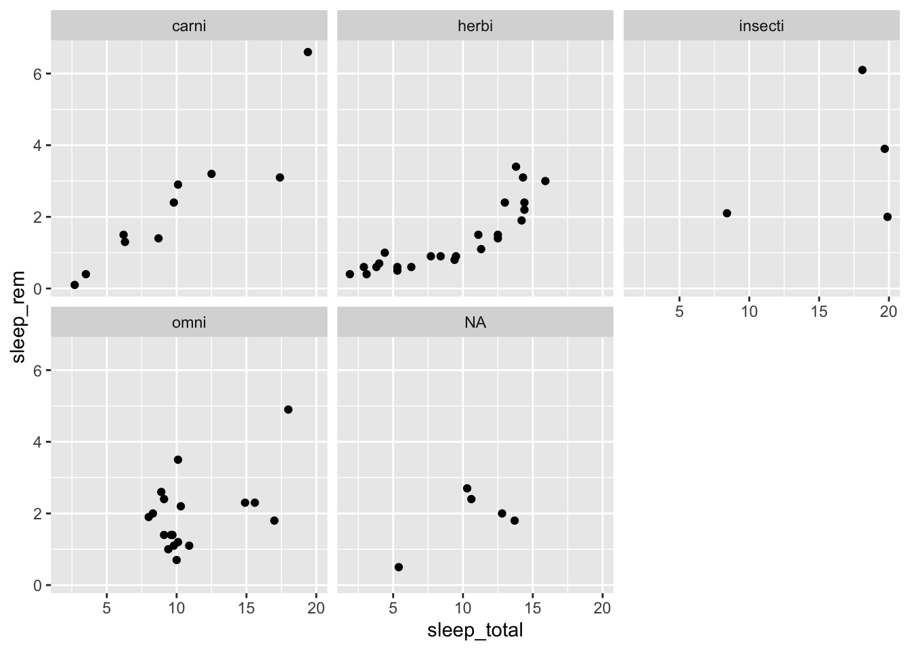

Chapter 1 EDA 1 (traditional df’s)
1.1 From base R to ggplot2
R has several systems for making graphs, but ggplot2 is one of the most versatile. Using ggplot2 requires that you have loaded the tidyverse package.
I’ll use the dataset msleep to show some key concepts. Let’s use our first graph to answer a question: what is the relationship between REM sleep and total sleep? These are both numerical variables, so a good plot choice is a scatterplot. Using R’s built in plot function:
plot(msleep$sleep_total, msleep$sleep_rem)How can we do the same thing in ggplot2?
ggplot(data = <DATA>) +
<GEOM_FUNCTION>(mapping = aes(<MAPPINGS>))Let’s go through each of these things. First, DATA is the name of your data frame (or tibble). Second, GEOM_FUNCTION specifies the type of plot; ggplot2 comes with many geom functions that each add a different type of layer to a plot. Each geom function in ggplot2 takes a MAPPING argument. This defines how variables in your dataset are mapped to visual properties. The mapping argument is always paired with aes(), and the x and y arguments of aes() specify which variables to map to the x and y axes; ggplot2 looks for the mapped variables in the data argument, in this case, msleep.
For a scatterplot, the GEOM_FUNCTION is geom_point. So, we can generate our scatterplot as,
ggplot(data = msleep) +
geom_point(mapping = aes(x = sleep_total, y = sleep_rem))We might ask whether this relationship depends on the mammal’s diet. We could approach this question by color coding the points based on what the mammal eats, as specified by the vore variable.
ggplot(data = msleep) +
geom_point(mapping = aes(x = sleep_total, y = sleep_rem, color = vore))Another way, particularly useful for categorical variables, is to split your plot into facets, subplots that each display one subset of the data. To facet your plot by a single variable, use facet_wrap(). The first argument of facet_wrap() should be a formula, which you create with ~ followed by a variable name (here “formula” is the name of a data structure in R, not a synonym for “equation”). The variable that you pass to facet_wrap() should be discrete.
ggplot(data = msleep) +
geom_point(mapping = aes(x = sleep_total, y = sleep_rem)) +
facet_wrap( ~ vore, nrow = 2)
From these plots, it seems that there is a linear relationship between total sleep and REM sleep for herbivores and carnivores but not necessarily for the other mammal types.
We might further ask whether this relationship depends on the mammal’s diet and body size. We could approach this question by further size coding the points based on size, as specified by the bodywt variable.
ggplot(data = filter(msleep, bodywt <= 1000)) +
geom_point(mapping = aes(x = sleep_total, y = sleep_rem, color = vore, size = (bodywt)))It looks like the bigger mammals tend to get little sleep and the smaller animals get more sleep, on average.
1.2 Linear regression
We can take our EDA one step further by fitting a linear regression to the data. In the last section, we noticed that there is a linear relationship between rem sleep and total sleep for herbivores and carnivores. To learn more about this relationship, we can subset our data to just these two vore types and fit a linear regression model to the data. This model will have the form:
\[\begin{equation} \text{sleep_rem} = \hat{\beta_0} + \hat{\beta_1} \times \text{sleep_total}. \end{equation}\]
Before we fit the model, let us subset the data to just the relevant observations.
mod_df = filter(msleep, vore %in% c("carni", "herbi"))
mod = lm(sleep_rem ~ sleep_total, data = mod_df)
mod %>% tidy() %>% kable()| term | estimate | std.error | statistic | p.value |
|---|---|---|---|---|
| (Intercept) | -0.4975947 | 0.2831096 | -1.757605 | 0.0883788 |
| sleep_total | 0.2298045 | 0.0272162 | 8.443680 | 0.0000000 |
How would you interpret these estimates?
We could visualize this relationship by adding another GEOM_FUNCTION.
mod_df %>% ggplot(aes(x = sleep_total, y = sleep_rem)) +
geom_point() +
geom_smooth(formula = y ~ x, method = lm)Another question we could address is whether this relationship is different for herbivores and carnivores. This can easily be addressed visually by making the linetype depend on vore.
mod_df %>% ggplot(aes(x = sleep_total, y = sleep_rem)) +
geom_point(aes(color = vore)) +
geom_smooth(formula = y ~ x, method = lm, aes(linetype = vore, color = vore)) +
theme_minimal()1.3 Assignment 1
For this assignment, you will investigate the relationship between sleep_rem (explanatory variable) and the brain’s proportion of total bodyweight (i.e., brainwt/bodywt - this is the response variable). To do this, do the following:
Modify your data frame to include the response variable. Name this variable
brain_proportion. Hint: use themutatefunction.Remove any observations that have an NA value for either the response or explanatory variable. Hint: use the
drop_nafunction.Visualize the relationship between the explanatory and response variable. Does the relationship change based on
vore? If so, how?Remove any
voretypes that have fewer than 5 observations and again visualize the relationship between the explanatory and response variable. Is the relationship different betweenvoretypes? Are there any outliers?